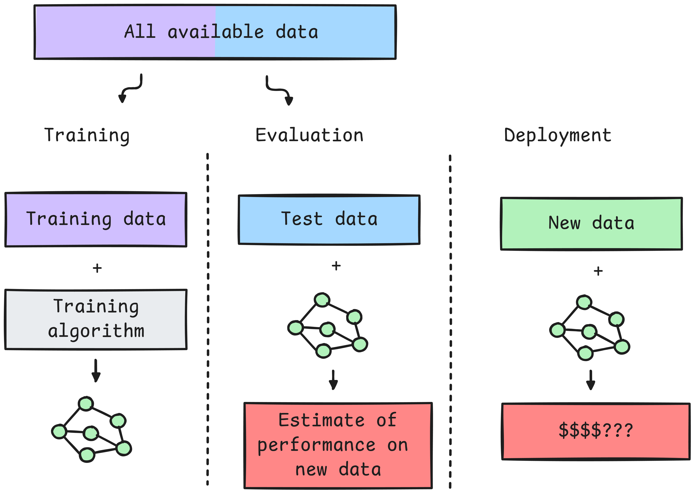

Working with Data
Fraida Fund
Recap: Machine learning is data driven
Garbage in, garbage out
Model training vs evaluation vs deployment

| Training Accuracy | Evaluation Accuracy | Deployment Accuracy | Outcome |
|---|---|---|---|
| 0.95 | 0.93 | 0.91 | 🤩 |
| 0.55 | 0.52 | N/A | 😐 |
| 0.95 | 0.93 | 0.51 | 😱 |
Working with data: two stages
- Is this data appropriate for the task?
- How should I prepare it for modeling?
Stage 1: Is this data appropriate for the task?
Legal and ethical concerns
- Consent: Did people agree to this data being collected and used for this purpose?
- Privacy: Could the data identify people or reveal sensitive information?
- Copyright: Do we have the right to use, modify, and redistribute the data?
- Bias/fairness: Could it produce unequal outcomes?
Representativeness concerns
Is the data similar to deployment setting in:
- Population: Do the people, places, or objects in the data match the population where the model will be used?
- Context/setting: Does the location and data collection environment match where the model will be used?
- Time period: Does the data reflect the period when the model will make predictions?
- Label balance: Is the distribution of the target similar to what the model will encounter?
Predictive feature concerns
Before modeling, ask:
- Plausible signal: Is there a defensible reason this should predict the target?
- Artifacts and proxies: Could the model use an accidental artifact?
Example: distinguish real headshots from AI generated headshots.
| “Real” training image | Real deployment image |
|---|---|
 |
| Earlier generator | Newer generator |
|---|---|
Other data quality concerns
- Label error
- Other data entry error
- Inconsistent units/formats
- Missing data
Stage 2: How do I process the data?
- Explore data, make and check assumptions
- Split data (avoid data leakage)
- Select features, target
- Construct samples
- Handle missing data
- Convert to numeric types
- Create “transformed” features
Make and check assumptions
Split data
Select features
Include features if they are:
- Plausibly predictive
- Available at inference time
- Don’t have other major issues
Select target
Target should be:
- measureable
- available
- correct
Construct samples
For each sample, you need:
- all features you plan to use
- the corresponding target value
- a reliable way to match them
Handle missing data
Convert to numeric types
- ordinal and one-hot encoding of categorical data
- text to “bag of words” or other representation
- image data to raw pixels
- audio to frequency domain (or image of frequency domain) features
Create “transformed” features
Data leakage
Types of data leakage (1)
No independent test set:
- no test set at all!
- random split of samples that are not independent
- preprocessing uses entire data
- model selection uses test set
Types of data leakage (2)
Inappropriate features:
- feature not available at inference time
- feature is a proxy for target variable in data, but not in deployment
Signs of potential data leakage (after training)
- Performance is “too good to be true”
- Unexpected behavior of model (e.g. learns from a feature that shouldn’t help)
Detecting data leakage
- Exploratory data analysis
- Study the data before, during, and after you use it!
- Explainable ML methods
- Early testing in production